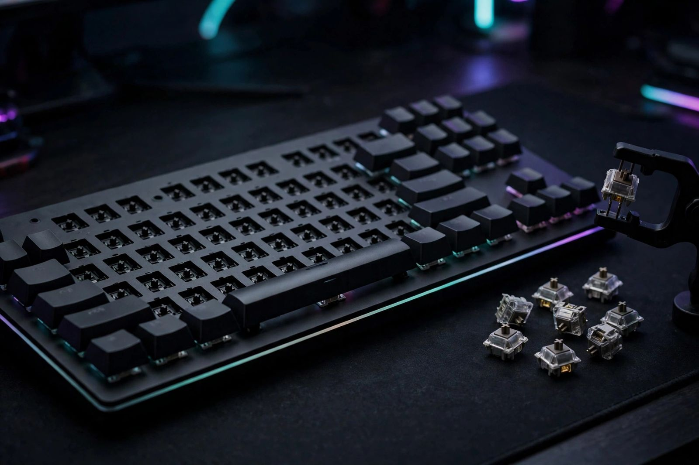

Budget hot swap keyboard check: 3 pin vs 5 pin, sockets and the bent pin trap

Can any replacement switch go into any keyboard that calls itself hot swap? No, and the exceptions are exactly where budget buyers lose money. A switch has to match the board on three separate points: the socket family, the pin count, and the physical condition of its own two metal pins on the day it gets pressed in. Listings advertise the first point loudly and the other two not at all. The check below takes about ten minutes with the listing, the board, and one loose switch, and it runs before any switch order is placed.
The socket decides first
Hot swap means the switches are held by sockets on the circuit board instead of solder. The socket grips each switch pin with a spring loaded contact, so a switch pulls out and a new one presses in, with a full board swap taking about 15 to 20 minutes using a switch puller. One distinction matters before anything else: hot swap describes the switches, not the keycaps. Keycaps pull off every keyboard ever made, so a listing that shows keycaps being removed has demonstrated nothing.
Three socket families exist, and switches do not cross between them. MX sockets accept Cherry MX pattern switches and the many compatible brands built to that pattern. Optical sockets accept optical switches only. Hall effect boards accept their own magnetic switches only. An MX switch pressed toward an optical board is not a tight fit to work around; it is the wrong part, full stop.
Within MX boards, the socket brand sets the wear budget. Kailh sockets, the common fitting in budget and mid range boards, are rated at 100 or more swap cycles. Gateron v2 sockets, found in newer premium boards, are rated at 50,000 or more cycles. That gap sounds alarming until it is converted into habits: at five full board swaps a year, which is more swapping than most owners ever do, the Kailh rating works out to roughly 20 years of use. The practical reading for a budget board is calmer than the raw numbers suggest. Swap to find a feel, swap to replace a dead switch, and the socket will outlast the board around it. Swap monthly as a hobby ritual and the premium socket starts to earn its price.
Identifying the socket takes one look. Kailh sockets are black, with a visible leaf spring contact inside. Gateron v2 sockets are slightly wider and more enclosed. If the listing names neither, price is the tell: budget boards under $60 almost always use Kailh sockets.
3 pin vs 5 pin, settled
The pin count confuses buyers because the name counts plastic as well as metal. Every MX switch has two metal pins, and those two pins carry the signal. A 3 pin switch adds one plastic centre post. A 5 pin switch adds the centre post plus two plastic legs, one on each side, which plug into holes in the circuit board and steady the switch.
| Switch in hand | Board with 3 pin sockets | Board with 5 pin sockets |
|---|---|---|
| 3 pin switch | Fits as intended | Fits, may wobble slightly without the extra legs |
| 5 pin switch | Extra legs block insertion until they are clipped off with flush cutters | Fits as intended, steadiest result |
| Optical or Hall effect switch | Does not work | Does not work; each needs its own socket family |
Two consequences follow. First, clipping the extra legs off a 5 pin switch does not affect its electrical function, so a good price on 5 pin switches is still a good price for a 3 pin board, plus two minutes with flush cutters. Second, the wobble note runs the other way: a 3 pin switch in a 5 pin board works, but owners who type hard may feel the difference, so a board with 5 pin sockets deserves 5 pin switches when the choice is free.
Switch feel is the other half of the purchase, and it is recoverable in a way layout is not. Feel falls into three families. Linear switches travel smoothly with no bump and no click. Tactile switches have a bump partway down and no click. Clicky switches have the bump plus an audible click. Forces differ by model: one maker lists its linear Fox at 45g and Lynx at 40g, its tactile Mako at 45g and Panda at 50g, and its clicky Raptor at 55g. On a hot swap board a wrong first feel costs one set of switches. On a soldered board it costs the board, which is the whole argument in one sentence.
The swap procedure, in order
- Confirm the board is hot swap from the socket, not the slogan. Pull one keycap, then one switch, using the switch puller on the clips at opposite sides of the housing. A switch that lifts out cleanly proves the board. A switch that will not move is soldered, and the project stops here with nothing spent. Check: one switch out and back in, key still registering.
- Read the socket. Look into the empty socket. Black housing with a visible leaf spring points to Kailh and its roughly 100 cycle rating. A wider, enclosed socket points to Gateron v2. Check: socket family named before switches are ordered.
- Count the pins on the switch that came out. Two metal pins plus a centre post means 3 pin. Two extra plastic legs means 5 pin. Order the same count, or plan to clip. Check: pin count written down, not remembered.
- Inspect every new switch at eye level before insertion. Hold each switch upside down and look along the pins. They should be straight and parallel. A bent pin gets straightened gently with fingers or tweezers. This step is the whole defence against socket damage, because forcing a bent pin into a socket deforms the spring contact permanently. Check: no switch goes in with a pin the eye has not cleared.
- Press straight down, and stop at resistance. Align the pins with the socket holes, match the orientation of the neighbouring switches, and press with firm, even pressure until the switch seats. Resistance is information, not a challenge: pull the switch back out and reinspect the pins. Check: switch seated flush, keycap replaced, key registering on every press.
- Swap a small zone first. Change the movement keys or one row, play for a few days, then decide on the full board. A feel that charms for ten minutes can fatigue over a week. Check: the trial zone survives real sessions before the remaining switches are ordered.
What success looks like: every swapped key registers cleanly, no key feels mushy or intermittent, and the board still has most of its socket life in reserve because no pin was ever forced.
What the experiment costs
Prices below were checked on 14 November 2026 against the maker guide that publishes them. They are US list prices from that guide, shown to place hot swap in the wider market, not as Canadian shelf prices. Check current Canadian retailer pricing before buying.
| Board (maker list, checked 14 Nov 2026) | Layout | Price | Hot swap note |
|---|---|---|---|
| Glorious GMMK 3 Prebuilt | 65% | US$139.99 | Hot swap across 3 pin and 5 pin MX switches, confirmed in independent testing cited by the maker |
| Glorious GMMK 3 Prebuilt | 75% | US$154.99 | Same socket support, larger layout |
| Glorious GMMK 3 Prebuilt | 100% | US$164.99 | Same socket support, full size layout |
| Redragon K617 Fizz | 60% | Listed in the under $50 tier in a cheap keyboard roundup checked the same week | Hot swap sockets for 3 pin and 5 pin switches, red linear switches fitted, named that roundup best hot swap pick |
The spread carries the lesson. Hot swap used to be a premium feature with a premium attached. A roundup of cheap gaming keyboards now puts a hot swap board in the under $50 tier, with its switches rated at 50 million presses, while a maker board at three times the price sells the same socket idea with better build around it. The feature itself is no longer the expensive part. What still costs money is buying the wrong switches for the socket in hand, which is why the ten minute check sits at the top of this page and the shopping sits at the bottom.
One repair figure belongs in the budget too. A replacement socket is a part that costs about $0.10. The catch is the fitting: a worn or damaged socket needs resoldering, so the real price of a forced pin is a soldering job or a repair bill, not the dime the part costs. Prevention is a ten second look at eye level. There is no cheaper insurance on this page.
The decision, by board type
Buying a first board: treat hot swap support as the first spec to confirm, ahead of lighting and ahead of the fitted switch feel, because it converts every later preference change from a board purchase into a switch purchase. Confirm the socket family and pin count on the listing before checkout.
Owning a budget board already: run the six step check, name the socket, and swap a trial zone. The roughly 100 cycle Kailh rating is a reason to swap deliberately, not a reason to avoid swapping.
Owning a soldered board: hot swap envy is not, by itself, a reason to replace a board that works. The honest triggers are a dead switch, a feel that genuinely fights the games being played, or a planned second board. Until one of those lands, the soldered board keeps its place and the switch catalogue stays closed.
— Dex Carter, Tech Writer